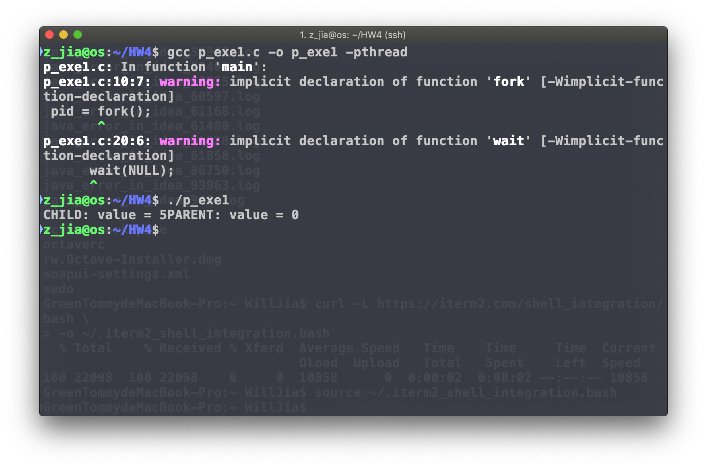
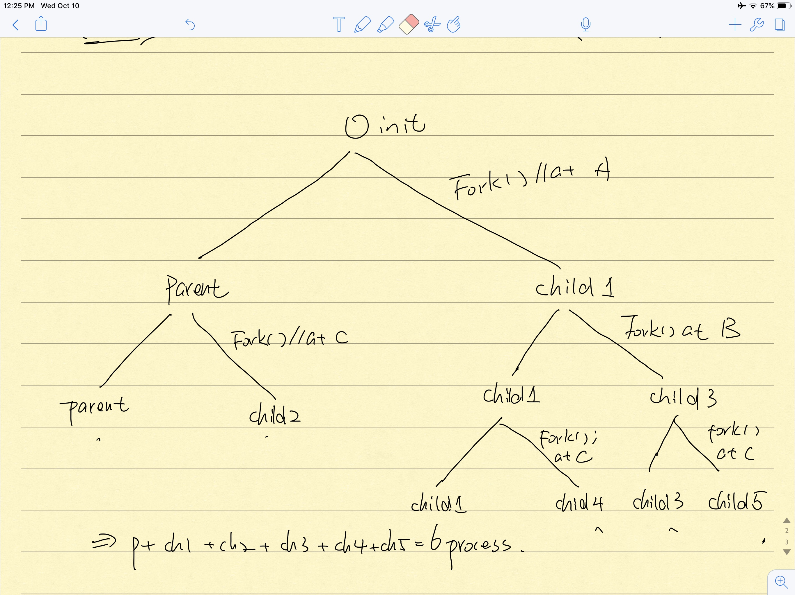
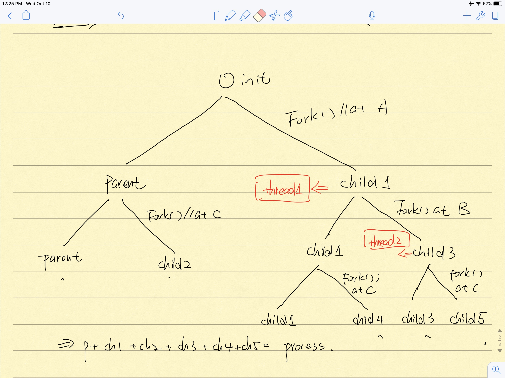
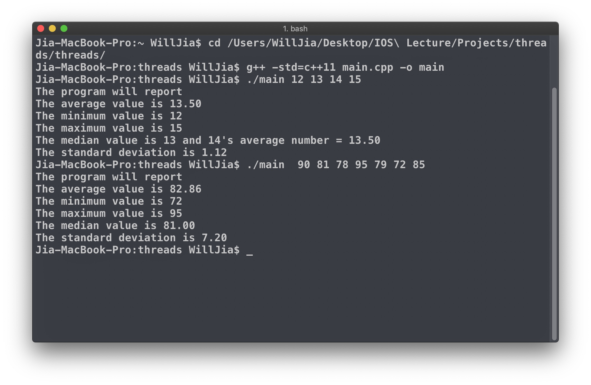
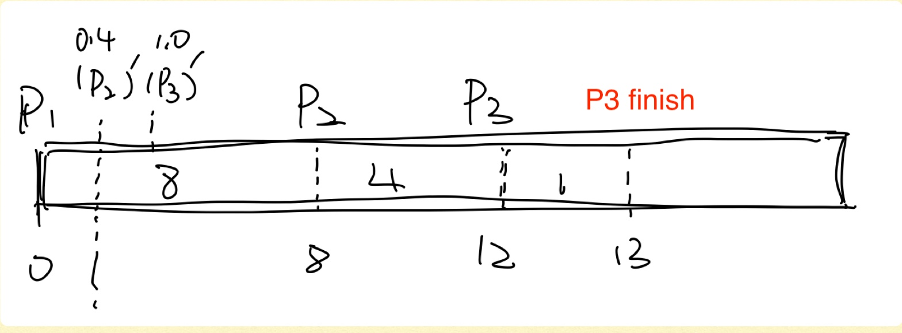
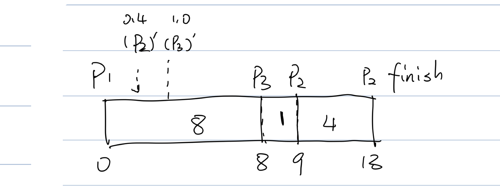
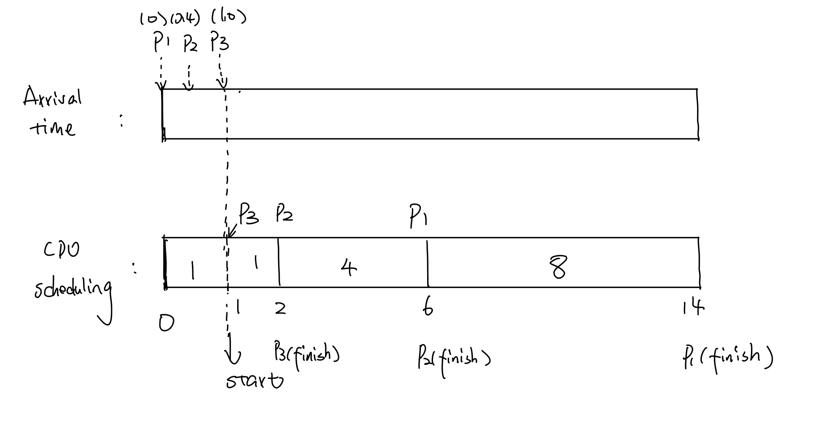
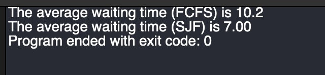
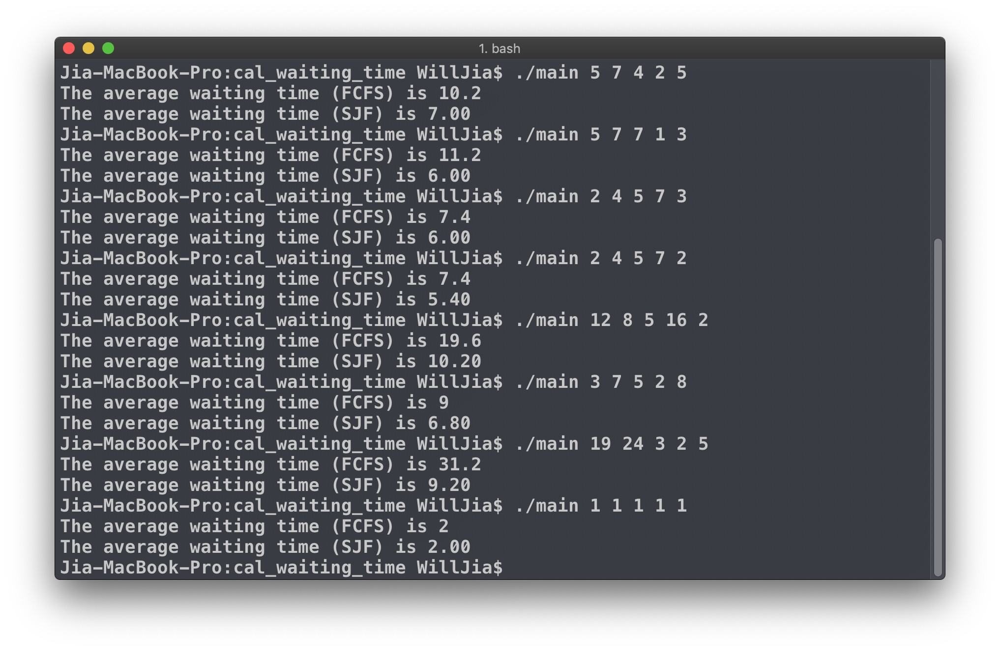

Homework 4
CSCI 3431: Operating System
Fall 2018
Date: October 3, 2018
Due: October 10, 2018
Home Work #4
Name: Zesheng Jia
A#: A00416452
Please write your solutions in this file and upload it to
moodle
Description: This
homework is designed to make you familiar with multi-threading. In particular, the
usage of thread management functions available in pthread library. There are
also two questions related to CPU scheduling.
1.
The program shown
below uses the Pthreads API. What would be the output from the program at LINE
C and LINE P? Note: use -pthread flag to
compile the program
(15 points)
#include <pthread.h>
#include
<stdio.h>
int value = 0;
void *runner(void *param); /* the thread */
int main(int argc, char *argv[]) {
pid_t
pid;
pthread_t
tid;
pthread_attr_t
attr;
pid
= fork();
if (pid == 0) {
/* child process */
pthread_attr_init(&attr);
pthread_create(&tid, &attr, runner, NULL);
pthread_join(tid, NULL);
printf("CHILD: value = %d", value); /* LINE C */
}
else if (pid > 0) {
/* parent process */
wait(NULL);
printf("PARENT: value = %d", value); /* LINE P */
}
}
void *runner(void *param) {
value = 5;
pthread_exit(0);
}
Sol.
1.
Thread creation
happened in child process.
And the “value” of child
process is a copy of parent process if it is changed. So, the changing of value
in child process will not influence parent parameter.
And thread gets the reference
of parameter. Therefore, child value = 5. And parent value = 0;

2.
Consider the
following code.
pid_t pid;
pid = fork(); // A
if
(pid == 0) {
/* child process */
fork(); // B
pthread_create(. . .);
}
fork(); // C
(a). How many
unique processes are created and justify your answer? (7.5 points)
6 in total.
(b). How many
unique threads are created and justify? (7.5 points)
2 threads.
Thread 1 will create by child1.
Thread 2 will create by child3

3. Write a multithreaded program that calculates various statistical values for a list of numbers (integers). This program will be passed a series of numbers on the command line and will then create five separate worker threads. One thread will determine the average of the numbers, the second will determine the maximum value, the third will determine the minimum value, fourth will determine the median value and the fifth will compute the std. deviation. For example, suppose your program is passed the integers
(./program 90 81 78 95 79 72 85)
The program will
report
The average value
is 82.86
The maximum value is 95
The standard
deviation is 7.20
The variables representing the average, minimum, and maximum
values will be stored globally. The worker threads will set these values, and
the parent thread will output the values once the workers have exited
(35 points)
Note: if you include math.h, then use an
additional -lm flag to compile the
program
Output:

Source code:
4. Suppose that the following processes arrive for execution at the times indicated. Each process will run for the amount of time listed. In answering the questions, use non-preemptive scheduling, and base all decisions on the information you have at the time the decision must be made.
|
Process |
Arrival Time |
Burst Time |
|
P1 |
0.0 |
8 |
|
P2 |
0.4 |
4 |
|
P3 |
1.0 |
1 |
a. What is the average turnaround time for these processes with the FCFS scheduling algorithm?
b. What is the average turnaround time for these processes with the SJF scheduling algorithm?
c. The SJF algorithm is supposed to improve performance but notice that we chose to run process P1 at time 0 because we did not know that two shorter processes would arrive soon. Compute what the average turnaround time will be if the CPU is left idle for the first 1 unit and then SJF scheduling is used. Remember that processes P1 and P2 are waiting during this idle time, so their waiting time may increase. This algorithm could be known as future-knowledge scheduling.
(15 points)
Sol.
1.

Then Tp1 = 8 Tp2= 12 - 0.4 = 11.6 Tp3 = 13 - 1 = 12;
So, Tfcfs = (Tp1 + Tp2 + Tp3)/3 = (8 + 11.6 + 12)/3 = 31.6 / 3 = 10.53
2.

Then Tp1 = 8 Tp2 = 13 - 0.4 = 12.6 Tp3 = 9 - 1 = 8
Tsjf = (8 + 12.6 + 8 ) / 3 = 28.6 / 3 = 9.53
3.

Then Tp1 = 1 + 1 + 4 + 8 = 14
Tp2 = 6 - 0.4 = 6 - 0.4 = 5.6
Tp3 = 2 - 1 = 1
Tsjf2 = (14 + 5.6 + 1) / 3 = 20.6 / 3 = 6.87
5. Write
a multithreaded program that will calculate average waiting time with FCFS and
SJF (non-preemptive) algorithms in different threads. Input is an array or
integers (burst times, arrival time is always 0). Output is 2 lines: “average
waiting time (FCFS) is” and “average waiting time (SJF) is”. Two worker threads
should be used: one should calculate average waiting time with FCFS and another
should calculate average waiting time with SJF. The program should accept up to
128 burst times (integers)
Example input:
./program 5 7 4 2
5
Example output:
The average waiting time (FCFS) is 10.2
The average waiting time (SJF) is 7.00
(20 points)
Output:


Source code:
References:
https://www.programiz.com/cpp-programming/examples/standard-deviation (how to compute standard deviation)